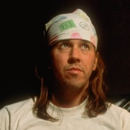

Algunos pacientes psiquiátricos –además de un buen porcentaje de personas que dependen tanto de productos químicos para sentir bienestar que cuando tienen que abandonar la química pasan por un trauma de pérdida que les llega a los sistemas más profundos del alma– conocen de primera mano que hay más de un tipo de la llamada «depresión». Uno es de grado inferior y a veces se denomina «anhedonía» o «melancolía simple». Es una especie de sopor espiritual por el cual se pierde la capacidad de sentir placer o cariño por cosas que antaño eran importantes. El ávido jugador de bolera abandona la liga y se queda en casa viendo cartuchos de kick-boxing. El gourmand renuncia a comer. El sensual de repente descubre que su amada Unidad no es más que un apéndice insensible que cuelga allí. La amante esposa y madre encuentra de improviso que su idea de la familia es tan conmovedora como el teorema de Euclides. Esta forma de depresión es una especie de novocaína emocional y, si bien no es abiertamente dolorosa, desconcierta y… bueno, deprime. Kate Gompert siempre ha pensado en este estado anhedónico como una especie de abstracción radical de todo, un vaciamiento […]
El Gran Tiburón Blanco del dolor. Las autoridades denominan esta condición «depresión clínica» o «depresión involutiva» o «disforia unipolar». En realidad, se trata de una simple incapacidad para los sentimientos, una muerte del alma; Kate Gompert vive esta depresión de nivel depredador cuando se abstiene de la marihuana secreta como si fuera un sentimiento por sí misma. Tiene muchos nombres –«angustia», «desesperación», «tormento», o citando a Burton, «melancolía», o la más autorizada «depresión psicótica» de Yevtuschenko–, pero para Kate Gompert, metida en las trincheras y en su compañía, es simplemente Ello.
Ello es un grado de dolor psíquico totalmente incompatible con la vida humana tal como la conocemos. Ello es una sensación de mal radical y consumado no solo como una característica más, sino como la esencia misma de la existencia consciente. Ello es una sensación de envenenamiento que invade al ser en sus niveles más elementales. Ello es una náusea de las células y del espíritu. Ello es la preclara intuición de que el mundo es totalmente rico y animado y unitario y asimismo totalmente doloroso y maligno y contrario al ser, al que no solo deprime, sino que también lo infla y coagula y lo envuelve con sus negros pliegues y lo absorbe en su interior de modo que se alcanza una unidad casi mística con un mundo cuyos constituyentes significan daños dolorosos.
Ello también es solitario de un modo que no se puede expresar. No hay manera de que Kate Gompert pueda ni siquiera intentar que alguien entienda lo que es una depresión clínica, ni siquiera otra persona que también esté clínicamente deprimida, porque una persona en ese estado es incapaz de empatizar con ningún otro ser viviente. Esta Incapacidad anhedónica para Identificarse forma parte integral de Ello. Si a una persona con dolor físico le resulta difícil prestar atención a algo que no sea el dolor, una persona clínicamente deprimida no puede ni siquiera percibir ninguna otra persona o cosa como independiente del dolor universal que la digiere célula a célula. Todo es parte del problema y no hay solución. Es un infierno.